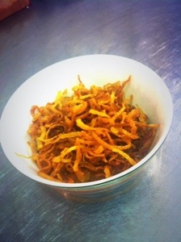
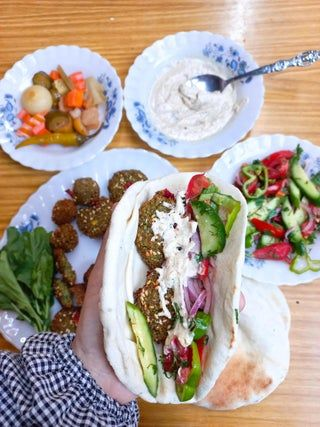

My favorite food in egypt
kushari
Koshari (also spelled, Kushari) is the national dish of my birthplace, Egypt. By far one of my favorite things to eat–EVER! No matter how far I’ve traveled, I will always crave a humble bowl of koshari as served in the streets of Egypt.
Full w Taameya
In Egypt, the falafel wich means Taameya equivalent is called ta'ameya, and it's commonly eaten for breakfast. Ta'ameya is slightly different from traditional falafel because it's made with fava beans instead of only chickpeas. The fava beans make the texture a bit softer on the inside. If you are ever visiting Egypt, one of my favorite Ta'ameya restaurants is called Zooba. They just recently opened a branch in New York City. Another one of my favorite street food restaurants in Cairo is called Gad.
